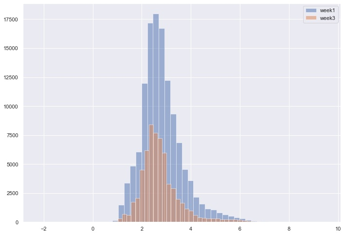
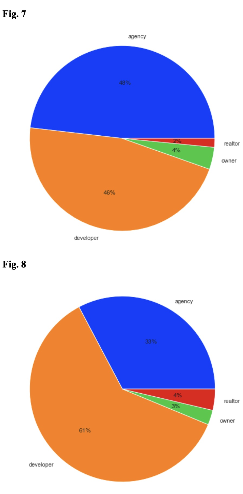
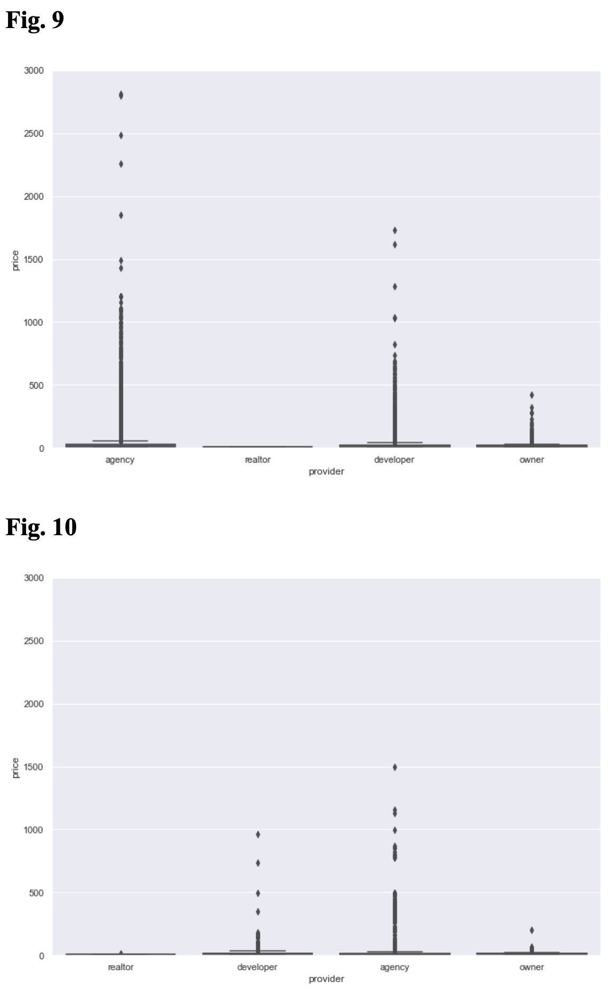

Moscow Real Estate
Analysis of Behaviour After Conflict
Extracts from the report
The research has been done by exploring and comparing the data of real estate prices in Moscow from one of the most popular websites for real estate - Move.
The changes between the 1st week and 3rd week of crisis in most luxurious and poor areas are the indicators for behavior of citizens.
Changes in Outskirts
Outskirts area with higher prices has disappeared, while other prices have less listings. From this analysis, we can say that the poorer people are more likely to sell their property in the crisis, rather than the rich.
Market share of market actors before conflict (Figure 7) and after conflict (Figure 8)
In addition to this, the market size of agencies has decreased, as rich listings were removed from the sales. With this information, we can say that the rich listings were removed by the agencies, who may have been asked to do that by the owners.
Number of outskirts listings before conflict (Figure 9) and after conflict (Figure 10)
Also, the linear regression that I built only partially predicts the prices of the real estate, which means, I have not determined the features need for the model.